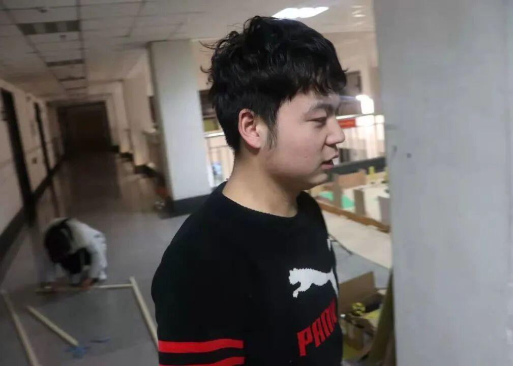
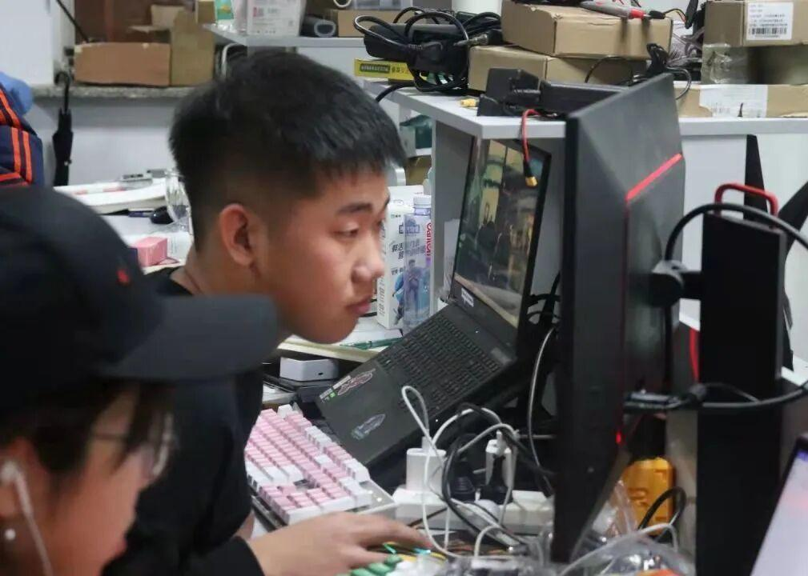
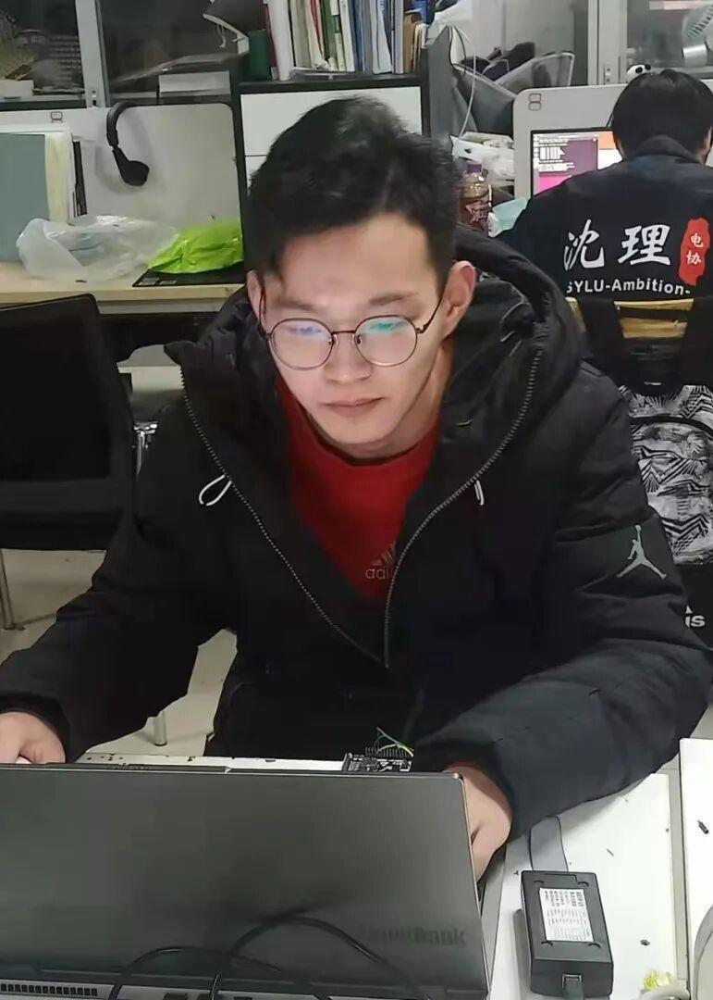
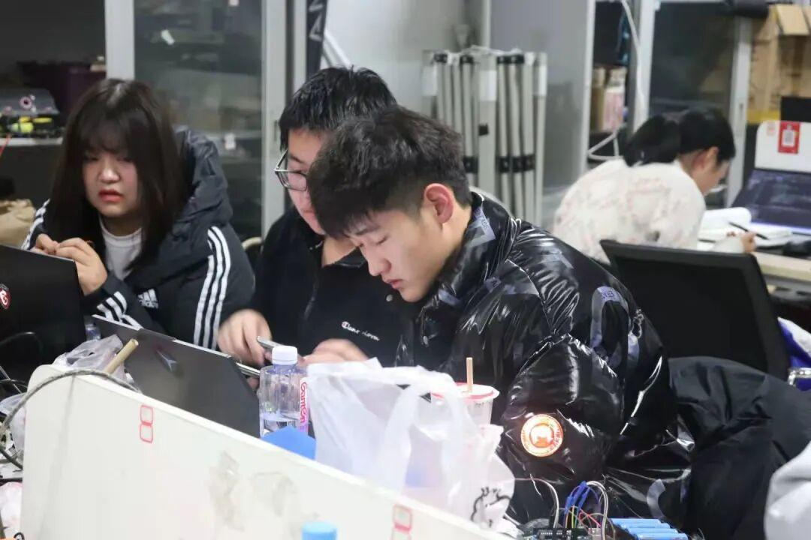

电控组前来报到！

电控组
DIANKONG

电控组，一个神秘的组别，高手云集，卧虎藏龙，他们掌控着整辆车的大脑（整车控制器），神经系统（传感器），血液（线束）还有心脏（动力电池）。下面就和我一起去了解一下这个神秘的组别吧！
电控组专访✦
Q
作一名合格的成员需要掌握哪些知识？
谭
作为一名合格的电控组成员需要有使用c语言完成小型中小型项目的能力，以及c++的阅读能力。掌握基本基本的算法、基本的电路知识 和stm32等单片机的架构及外设使用。但最重要的是对于机器人的热爱。
撒
作为一个电控成员，首先最基础我们要掌握一些stm32基本的外设，还有就对PID要有比较深的认识。
李
C语言知识 基本的电气 电路知识 数据结构作为进阶。
Q
电控组有没有什么令你难忘的经历吗？
谭
难忘的经历有很多啊！第一次参加理工杯时每天熬夜做小黄车，做到最后还有一辆不会动。校电赛时做电磁炮第一次在实验室看到了日初。省赛每天通宵调车到天亮，天亮了和撒浩杰张蓝鑫一起写上课要交的作业，然后吃沈理食堂的第一份早餐。电赛还有两个多小时交作品时整辆车冒烟，队友有给我凑配件。大家一起刷油漆准备场地又弄的全身都五颜六色，点点滴滴都很难忘......
撒
难忘的经历，还得是和我众哥省赛调平衡车，经历我们一个晚上的奋斗，最后发现少打一个零。
李
难忘的事情确实特别多 ，在电协的每一点经历都注定难忘；如大一参加理工杯，大二组织理工杯；一起准备各种比赛 ，一起学习讨论等等。
Q
新的一年有什么计划嘛？
谭
新的一年希望能够把英雄机器人做好，然后好好找份实习工作增加一下实习经验，去学一些自己感兴趣的技术。
撒
今年，还是继续提高自己的技术。
李
对于社团，和各组成员一起认真完成对技术部的人员培养，带领成员在大型比赛中去经历 去历练；对于自己，完成专业知识的学习，弥补自己的缺陷。
对新成员有什么寄语嘛
希望新来的小伙伴们坚持学习，提升自己。坚持才是最重要的。不要“一日曝十日寒”。
希望能坚持的学一下去，精诚所加，金石为开，充实的过好每一天
咱们电协是一个有爱，包容的团体，是一个学习技术与交流技术的平台，如果你也想在各种科技比赛中，崭露头角；或是想学习一门技术，亦或者想更充分的了解我们这个团体，这个组别；可以先加入我们，同时实验室在文体210，欢迎各位来了解更多。




学弟学妹们的专访来啦
Q
为什么要来到电控这个大家庭呢？

赵泽西
对这方面很感兴趣 想要学习更多的知识丰富自己
因为对电控比较感兴趣，之前也了解过一些单片机的，所以就想加入电控

代志明
Q
在学习中都学到了什么呢？

赵泽西
学到了关于stm32单片机方面使用的知识
在电控组主要还是学到了stm32的知识，也收获了很多朋友，在电协也很快乐（除了熬夜）
代志明
Q
对以后的学习有什么期望嘛？

赵泽西
希望可以了解的更深入
希望能像学长那样强吧

代志明
Q
表达一下对电控的祝福吧？

赵泽西
希望电控越来越好 代码不会出现bug！
啥别的祝福，冲国一冲国一冲国一（重要的事说三遍，还有琛宝女装）

代志明
\ 2022
如果说
操作手是魔法吟唱者
那么他们
就是赋予机器人灵魂的魔法拼凑者！
关于电控组
更精彩的故事
在春天开始❤
最后，就让我们祝愿我们的电协
会带着这份传承越来越好。
花会沿路盛开，我们以后的路也是！
文字|虹仔
排版|虹仔
审核|一只大苗